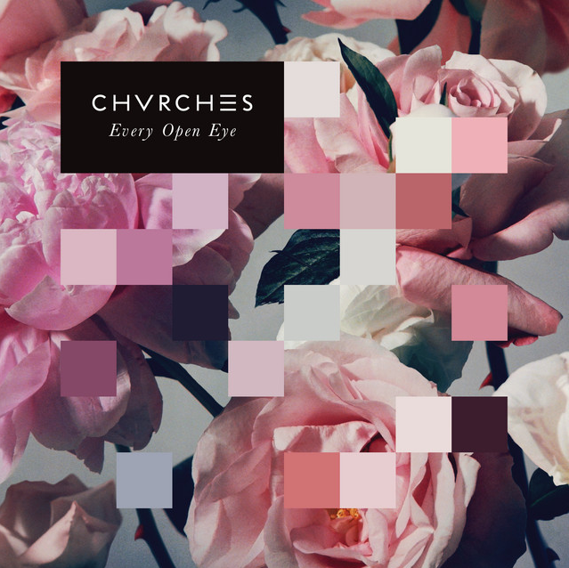
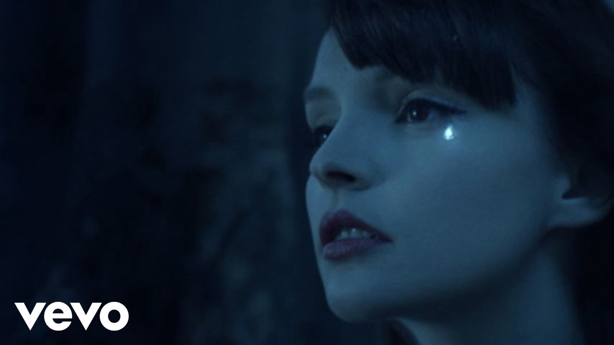

Spotify

YouTube
Turkos väldigt nära, är i lag Aqua är till för vattendrag Ljuvaste flicka, ack så fin Som Safir eller kanske Marin Stövlar och jeans, förstås indigo Som sommarens himmel, den djupaste blå